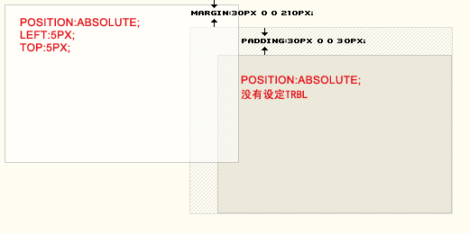
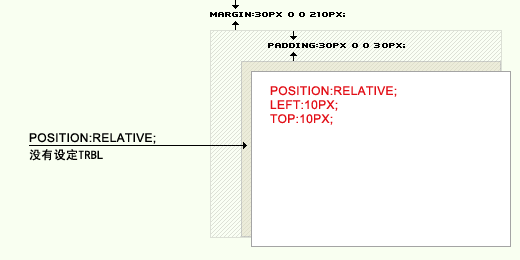

解读absolute与relative
很多朋友问过我absolute与relative怎么区分，怎么用？我们都知道absolute是绝对定位，relative是相对定位，但是这个绝对与相对是什么意思呢？绝对是什么地方的绝对，相对又是相对于什么地方而言的呢？那他们又有什么样的特性，可以做出什么样的效果呢？关于两者之间又有什么样的技巧呢？下面我们就来一一解读。
Absolute，CSS中的写法是：position:absolute; 他的意思是绝对定位，他是参照浏览器的左上角，配合TOP、RIGHT、BOTTOM、LEFT(下面简称TRBL)进行定位，在没有设定TRBL，默认依据父级的做标原始点为原始点。如果设定TRBL并且父级没有设定position属性，那么当前的absolute则以浏览器左上角为原始点进行定位，位置将由TRBL决定。

http://andymao.com/andy/upload/absolute.gif
一般来讲，网页居中的话用Absolute就容易出错，因为网页一直是随着分辨率的大小自动适应的，而Absolute则会以浏览器的左上角为原始点，不会应为分辨率的变化而变化位置。很多人出错就在于这点上出错。而网页居左其特性与Relative很相似，但是还是有本质的区别的。
Relative，CSS中的写法是：position:relative; 他的意思是相对定位，他是参照父级的原始点为原始点，无父级则以文本流的顺序在上一个元素的底部为原始点，配合TRBL进行定位，当父级内有padding等CSS属性时，当前级的原始点则参照父级内容区的原始点进行定位。

http://andymao.com/andy/upload/relative.gif
有时我们还需要依靠z-index来设定容器的上下关系，数值越大越在最上面，数值范围是自然数。但是z-index也不是万能的，z-index也受到了等级的限制，关于这个等级的限制请查看《无法冲破的等级》
position:relative/absolute无法冲破的等级
前段时间记得好像是谁在群里提出了一个实在是让大家都觉得很不理解的一个问题：
如果我我们设定LI为position:relative;设置span为position:absolute;那么我们会发现无论SPAN的z-index值设置得再高都将永远在后面父级的下面。
试一下很容易发现我们的子级，z-index的值达到了1000的被设定了position:absolut;子级都被档在了父级的下面。我想了很久，我觉得其根本问题是：设置同样的position:relative/absolute;同级标签之间的等级是无法用z-index超越的。我们上面的例子中的第一个LI的等级永远都要小于后一个LI的等级，所以我们在LI里的子级身上设置了position:absolute;，给了非常高的z-index值。
也许你会这样来想：只要针对有span的LI设置position:relative;不就好了吗？非常正确。当其它的LI都不设置position:relative;那么我们需要的那个子级就可以浮在所有的内容之上。但是如果实际上，所有的LI中都要有span，并且属性都需要一样怎么办？当然我们不大会需要有这样的效果。但是我们需要有这样的效果：子级全部是隐藏的，当有鼠标反应时出现并且浮在所有的内容之上。我们要知道，这确实是件让人头疼的事，因为我们上面见识到了，子级在显示的时候都被压在了下一个父级标签的下面。下面我们来实现一下这个鼠标反应的定位效果：
我们通过链接的鼠标事件来完成这个显示隐藏效果：
我们设定了a为position:relative;这样他的子级就会根据父级的左上角为坐标原点进行定位了。然后我们设定span的具体形状以及定位属性，然后把他隐藏了。我们再通过A的伪类:hover使得span被激活。我们看一下结果，我们会发现，所有应该在上面的现在全在下面了。那我们怎么解决这个难题呢，其实以CSS想强行突破是不太可能，所以我们反过来想，能不能让这个没有被触发的父级标签没有position:relative;属性，而只是触发的时候才有级这个父级赋上这样的值？其实想到这里基本上已经可以解决所有的问题了：
我们只要针对a:hover来设定其属性为position:relative;就可以了，这样只有在鼠标触发的时候A才会被赋于一个相对定位的属性。这样就完成可以解决被其它父级标签所挡的尴尬了。
当然如果不介意IE5这样的浏览器我们还可以把代码再做简化：
CSS可以改成这样：
经典论坛阅读处：
http://bbs.blueidea.com/thread-2720856-1-1.html
对《无法冲破的等级》一文的补充
前些时间发表的《position:relative/absolute无法冲破的等级》一文，讲了定位中的等级，这几天再看的时候发现文中讲得并不透彻，没有直指关键。所以特别的在这里做出补充希望能把position中的等级讲得更为清楚、明确一些。
我们都知道，position有四个不同的值，分别为：static | absolute | fixed | relative。在苏昱的《CSS2中文手册》中是这样解释的：static:无特殊定位，对象遵循HTML定位规则； absolute:将对象从文档流中拖出，使用left，right，top，bottom等属性进行绝对定位。而其层叠通过z-index属性定义。此时对象不具有边距，但仍有补白和边框； relative:对象不可层叠，但将依据left，right，top，bottom等属性在正常文档流中偏移位置； fixed:IE5.5及NS6尚不支持此属性。
但是要想改变对象的层叠位置需要的是另一个CSS属性：z-index。但是这个z-index并非是无所不能的，他受到了HTML代码等级的制约。z-index只能在同等级的HTML上体现他的作用。这里需要声明的是z-index只有在对象的position值为relative/absolute时才可以使用。下面我们就举些例子来解释等级的特性：
针对上面的这个HTML代码我们还需要写一段CSS来定义它：
这是最普通的在这种情况下#a与#b的层叠等级是可以通过z-index来设定的。这是没问的，那么什么样的情况下就会出现问题呢？我们再看一个实例：
根据这个结构再写一个CSS,要注意这个CSS中的不同的地方:
这时候我们看,不论#a设为多大的值,他都无法超过#b,所以说z-index是无法冲破HTML的等级的,他必需是要同等级的状态下才可以发挥威力.那么如何解决这个问题呢?我可以反过来想,堂兄弟之间的顺序不能被重组,何不把父辈的等级做一次重组呢?所以我们把#box_1的CSS中加入一个z-index:100; 在#box_2的CSS中加入z-index:1;这样再看一下效果:
这是指定父级重组了层叠的顺序,如果要是没有办法一一指定父级的顺序重组,那就要看看上一篇的《position:relative/absolute无法冲破的等级》.但是也不是什么问题都能解决,但是看看也许能帮你想到更好的办法!
蓝色理想阅读处: http://bbs.blueidea.com/thread-2725018-1-1.html